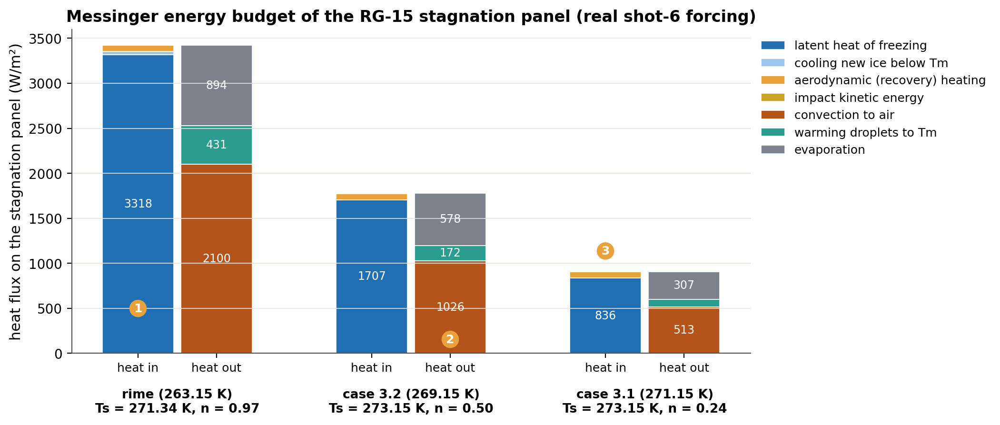
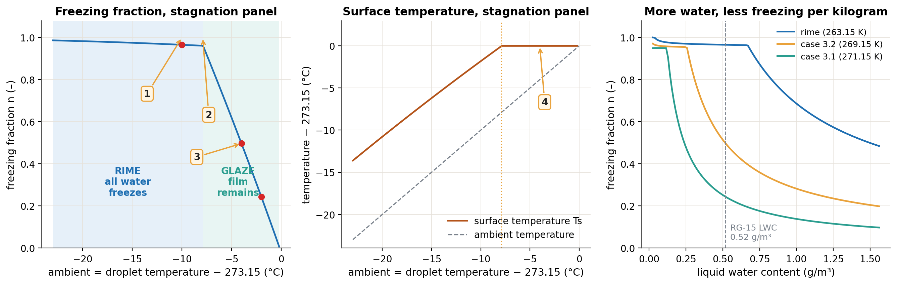
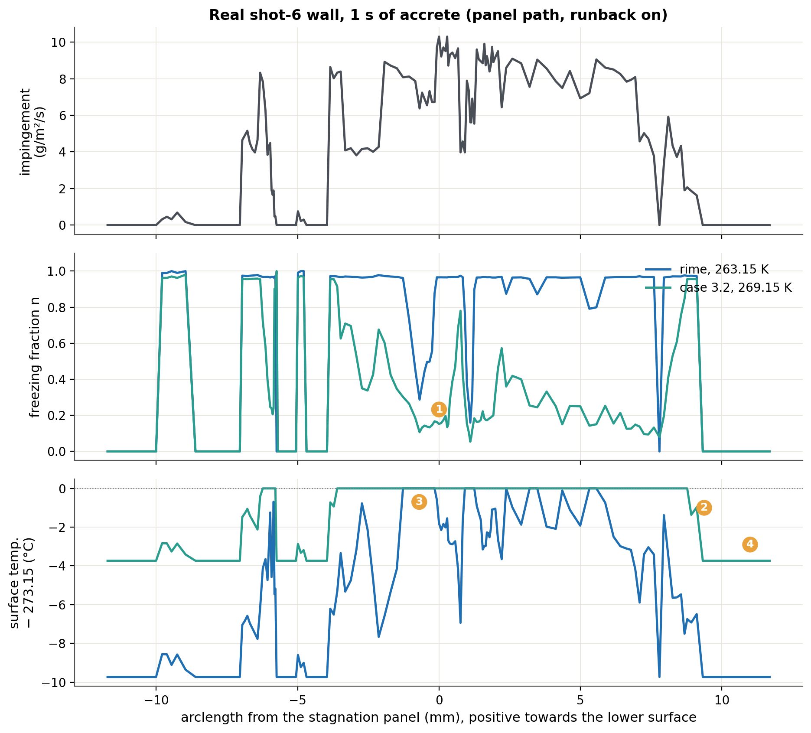
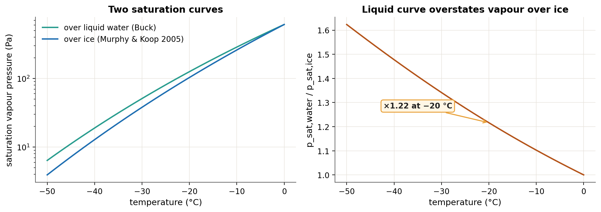

The freezing energy balance
Droplets have hit the wall (Step 4). Now the solver decides, panel by panel, how much of that water freezes, how much stays liquid and runs back, and how warm the surface gets. This one energy balance is what separates rime from glaze ice.
- A box on the wall Basic
- The mass balance Basic
- The energy terms Basic
- A real panel: where the heat goes Intermediate
- Rime, glaze and dry panels Intermediate
- From rime to glaze Intermediate
- The phase solve in code Intermediate
- Vapour exchange Advanced
- Recovery heating and the CFD heat-transfer coefficient Advanced
- Film sensible energy Advanced
- The nodal balance with a conducting solid Advanced
- Assumptions and limits Advanced
A box on the wall Basic
Think of one small piece of the wing surface, one panel of the wall polygon. Draw an imaginary box around it, thin enough to hold only the surface layer: the water film, if there is one, and the ice that forms during the time step. This box is the control volume. The solver keeps two ledgers for it: one for water mass, one for energy. Everything that enters must either stay, change phase, or leave.
This idea is old. It is usually called the Messinger model, after the 1953 analysis of an unheated surface in icing. The solver's own description of it is a "quasi-steady Messinger energy closure" (icing/thermo.py, module docstring). Quasi-steady means the box has no heat storage of its own: in each short time step, heat in equals heat out.
Freezing water releases heat. The air carries heat away. If the air can take away all the heat that freezing releases, all the water freezes on the spot: that is rime. If not, only part of it freezes and the rest stays liquid at 0 °C and is blown back along the surface: that is glaze. The energy balance on each panel decides which.
The mass balance Basic
Water arrives in two ways: droplets hit the panel, and liquid runs in from a neighbour. It can leave in three: it freezes, it evaporates, or it runs on. The rest stays as film. In symbols, over one time step and per metre of span (all masses are kg/m, because the solver is two-dimensional):
$$ M_\text{film,old} + M_\text{imp} + M_\text{in} = M_\text{ice} + M_\text{film,new} + M_\text{ev} + M_\text{out}. $$The local phase solve only sees the water that is already on the panel. The solver calls that available: old film (after transport) plus the new impingement. It then splits it three ways, as MODELS.md writes it:
Every panel is checked after each call. accrete() in icing/thermo.py raises an error if supplied = ice + final film + evaporation + outgoing runback fails on any panel by more than \(10^{-10}\) of the total water ("Local surface-water ledger did not close"). The same holds for the whole wall.
Freezing fraction
The classic summary number is the freezing fraction \(n\): the share of incoming water that freezes. The code defines it in accrete() as
new ice divided by everything supplied to the panel during the increment, counting gross incoming runback (ThermalResult.freezing_fraction). MODELS.md notes that this becomes the usual freezing fraction in steady conditions, but while film is still being stored it depends on the length of the observation interval. \(n = 1\) is rime. \(0 < n < 1\) is glaze. Evaporation makes \(n\) slightly less than 1 even when no liquid is left, because evaporated water never becomes ice.
The energy terms Basic
To add up energies of water, ice and vapour, you need a common zero. The solver takes liquid water at the melting temperature \(T_m = 273.15\) K as zero enthalpy. PHYSICS_REVIEW.md (section "Governing thermal balance") states this rule for the whole project. Relative to that reference:
| Phase | Specific enthalpy (J/kg) | Meaning |
|---|---|---|
| liquid water | \(c_w (T - T_m)\) | negative for supercooled droplets |
| ice | \(-L_f + c_i (T - T_m)\) | freezing removes \(L_f\); colder ice even less |
| vapour | \(L_v + c_v (T - T_m)\) | evaporation must supply \(L_v\) |
The constants sit at the top of icing/thermo.py: \(L_f = 333\,700\) J/kg, \(L_v = 2.501\times10^6\) J/kg, \(c_w = 4180\), \(c_i = 2100\), \(c_v = 1870\) J/(kg K), \(c_{p,\text{air}} = 1005\) J/(kg K), and \(T_m = 273.15\) K.
With this zero, the balance in MODELS.md reads
$$ \underbrace{E_\text{drop} + E_\text{kinetic}}_\text{sources} = Q_\text{convection} + Q_\text{substrate} + E_\text{evaporated} + E_\text{ice} $$with \(E_\text{ice} = M_\text{ice}\,[-L_f + c_i(T_s - T_m)]\) and \(E_\text{evaporated} = M_\text{ev}\,[L_v + c_v(T_s - T_m)]\). Since \(E_\text{ice}\) is negative, freezing acts as a heat source for the box. One by one:
- Droplet sensible heat \(M_\text{imp}\,c_w (T_d - T_m)\). Supercooled droplets arrive colder than \(T_m\), so this is negative: the panel must warm them up to 0 °C.
- Impact kinetic energy. The droplet tracker delivers it per panel (
kinetic_rateincollect/forcing.npz), computed from the actual impact speed, not the free-stream speed. - Convection \(h\,L\,\Delta t\,(T_s - T_\text{rec})\). \(h\) is the heat-transfer coefficient from the CFD (Step 3). \(T_\text{rec} = T_\infty + r U_\infty^2/(2c_p)\) is the recovery temperature with \(r = 0.85\) (
ThermalEnvironment.recovery_temperature). The \(r U^2/2c_p\) part is air heating by friction near the wall. - Evaporation mass \(M_\text{ev}\) from a Lewis-analogy law (see below), leaving with vapour enthalpy.
- Substrate heat \(Q_\text{sub}\): zero by default on the panel path, a fixed conductance if asked for, or a real conduction solve on the nodal path (below).
- Latent heat, hidden inside \(E_\text{ice}\): each kilogram that freezes gives \(L_f\), plus \(c_i(T_m - T_s)\) if the new ice cools below \(T_m\).
With one zero for all phases, evaporating ice automatically costs \(L_v + L_f\) and freezing automatically gives \(L_f\); no separate "phase switch" is needed. PHYSICS_REVIEW.md (2026-11-06 entry) records exactly this: "evaporating ice costs about Lv+Lf per kg without a separate switch". It also makes the energy ledgers of different modules add up, because they all use the same zero.
A real panel: where the heat goes Intermediate
To see the sizes of these terms, take the panel with the largest impingement on the real iced RG-15 airfoil: campaign glz81_32 (IPW-2 case 3.2), shot 6. Its forcing comes from the saved files results_32/shot_06/collect/forcing.npz and flow/surface_flow.vtu, read with the same wall_fields() call the campaign uses. On that panel the heat-transfer coefficient is 257 W/(m² K) and the droplets bring 10.3 g/(m² s) of water (collection efficiency about 0.79 at 25 m/s and 0.52 g/m³). The script then calls thermo.phase_cell() for one second with only the panel's own impingement: no runback, no conduction.
The free-stream conditions are those of the RG-15 campaigns: 25 m/s and 0.52 g/m³ in all three cases; only the temperature differs. The rime campaign ms_rg15c ran at 263.15 K, case 3.2 at 269.15 K and case 3.1 at 271.15 K (the nodal_case JSON files). To isolate the effect of temperature, the figure keeps the shot-6 airflow and impingement and changes only the air and droplet temperature. The 263.15 K and 271.15 K bars are therefore "what if" calculations on the case 3.2 geometry, not results of those campaigns.

thermo.phase_cell(), in W/m². For each temperature, the left bar is heat into the box and the right bar heat out; they are equal because the balance closes (residual below \(4\times10^{-5}\) W/m²). ① At 263.15 K latent heat of freezing is almost the whole heat input: all water freezes and the dry surface settles at 271.34 K. ② Convection is the largest loss in every case; at 269.15 K it, together with evaporation and droplet warming, can absorb only enough latent heat to freeze about half the water (\(n\) = 0.50). ③ At 271.15 K the air takes away only about half as much heat as at 269.15 K, so only about a quarter freezes. Impact kinetic energy (about 1.7 W/m²) and new-ice cooling are too small to see; recovery heating is the thin orange cap.Three things stand out. First, the dominant gain is always latent heat and the dominant loss is convection: icing is mostly a contest between those two. Second, evaporation is large: about a third (578 of 1776 W/m²) of the losses at 269.15 K, even though the air is saturated (relative humidity 1). The reason is that the wet surface sits at 0 °C, warmer than the air, so its saturation vapour density is higher. Third, the colder the air, the more heat each kilogram of droplets must absorb just to reach 0 °C (431 W/m² at 263.15 K, 172 W/m² at 269.15 K): cold droplets help freezing.
Rime, glaze and dry panels Intermediate
The balance has one equation but two unknowns: how much ice forms, and what the surface temperature is. Physics supplies the missing condition. A wet surface in this model is held at the melting point; a surface below the melting point must be dry. So there are three cases, and the solver picks one per panel per substep.
- Glaze (wet) branch. Set \(T_s = T_m\). Then the energy balance gives the ice mass directly: the freeze demand \(M_\text{ice} = (Q_\text{conv} + Q_\text{sub} + M_\text{ev}L_v - E_\text{sources})/L_f\). If that is no more than the available water, accept it. The unfrozen rest is film at \(T_m\), handed to runback.
- Rime (dry) branch. If the demand exceeds the water, all of it freezes and the surface must be colder than \(T_m\) (otherwise there would be heat left over). Now the ice mass is known and the unknown is \(T_s\). The solver finds it with a bracketed root solve (
scipy.optimize.brentq) of the full balance, including the sensible cooling of the new ice and the temperature dependence of evaporation. - Dry panel. A panel with no water at all has no phase change. Its temperature follows directly from convection and substrate exchange: \(T = (h\,T_\text{rec} + G\,T_\text{sub})/(h + G)\), where \(G\) is the substrate conductance (
accrete(), branchavailable == 0). This may exceed \(T_m\) when recovery heating is strong.
Two more outcomes are errors, by design. If the freeze demand is negative (the panel would need to melt or warm the film), the cold closure raises "Warm film or melting required; outside cold equilibrium closure". A dry panel that already carries ice and would warm above \(T_m\) also raises ("Dry existing ice would melt; requires a melting model"; PHYSICS_REVIEW.md, entry of 2026-11-05). The solver refuses rather than invent physics it does not have.
Evaluating the wet branch costs one function evaluation at \(T_m\), and its answer immediately tells whether the dry branch is needed (demand larger than water). The dry root solve only runs when it must. The bracket goes from 30 K below the colder of air and droplet (or substrate) temperature up to \(T_m\); if the balance has the same sign at both ends the code raises "Dry branch temperature is not bracketed" instead of guessing.
There is also a strict mode='rime' in accrete(). It does not force water to freeze. It only checks that the energy balance froze everything and raises "Rime assumption violated" if any liquid remains (MODELS.md: "It does not force every droplet to freeze when the energy budget is insufficient").
From rime to glaze Intermediate
Sweeping the air (and droplet) temperature on the same real stagnation panel shows the transition the balance predicts.

thermo.phase_cell() on the RG-15 shot-6 stagnation panel, one second, own impingement only. Left: freezing fraction. ① The rime campaign temperature (263.15 K) lies in the dry branch. ② The last dry temperature is −7.9 (265.25 K) °C: above it the wet branch takes over and \(n\) falls steeply. ③ Case 3.2 at −4 °C freezes half its water. Middle: surface temperature. In rime it lies between ambient and 0 °C (heated by latent heat); ④ in glaze it is pinned at exactly 0 °C. Right: at fixed temperature, more liquid water content means less freezing per kilogram, because the heat removal does not grow with the water supply. The curves stop at −0.2 °C (272.95 K): above it recovery heating leaves no freezing demand on this panel and phase_cell() raises "Warm film or melting required", as designed.The transition temperature is not a material constant. It depends on the heat-transfer coefficient, the water catch and humidity of each panel. Panels further back on the airfoil receive less water per square metre, so they stay rime at temperatures where the stagnation region is already glaze. That is why glaze runs have a wet band around the stagnation region and dry ice further back. Figure 4 shows this on the whole wall, now with runback switched on, and it adds a twist: runback concentrates water where the wall shear converges, which can wet a panel even at rime temperatures.

thermo.accrete() on the real shot-6 wall, with real HTC, impingement, shear, wall pressure and gravity, an adiabatic substrate and a dry start. Blue: 263.15 K; green: 269.15 K. ① At 269.15 K the whole impingement zone, from about −3.6 to +8.8 mm, is wet and held at 0 °C; with runback the freezing fraction there is mostly 0.1 to 0.4, lower than the 0.50 of the isolated stagnation panel, because incoming runback counts in the supply and film is still being stored after one second. ② Where the water runs out the panels switch to the dry branch and cool below 0 °C. ③ Even at 263.15 K a few panels around the stagnation point (about −1.3 to −0.2 mm, and near +1 mm) turn wet: there the wall shear changes sign, runback converges and brings more water than the local cooling can freeze. Elsewhere the rime case is dry, with \(n\) about 0.97 (the rest evaporates). ④ Panels outside the impingement zone hold no water; they sit at the recovery temperature (−3.74 °C and −9.74 °C). Water ledgers close to \(10^{-20}\) kg/m; the 269.15 K run needed 1231 transport substeps for 1 s against 39 for rime, because the film sets the CFL limit. This is the panel (accrete) path with no conduction; the rime campaign itself (nodal path, conducting solid) reported no film at all, and the glaze campaign uses the phase-aware path of Step 10.The phase solve in code Intermediate
icing/thermo.py → phase_cell() (one panel, one substep), accrete() (whole wall: transport, then phase on every panel, with ledgers), ThermalEnvironment (ambient conditions), evaporation_flux(), local_recovery_temperature().
Here is the whole local solve. It is short, and every line maps onto a term above.
def phase_cell(available, impinged, kinetic, length, dt, htc, env, incoming_film_energy=0.):
source = impinged * CW * (env.droplet_temperature - TM) + kinetic + incoming_film_energy
def parts(t):
evap = min(available, evaporation_flux(t, htc, env) * length * dt)
cooling = (htc * (t - env.recovery_temperature)
+env.substrate_conductance*(t-env.substrate_temperature)) * length * dt
return evap, cooling
evap, cooling = parts(TM)
remaining = available - evap
freeze_demand = (cooling + evap * LV - source) / LF
if freeze_demand < -1e-12:
raise ValueError('Warm film or melting required; outside cold equilibrium closure')
if freeze_demand <= remaining:
ice = max(0., freeze_demand)
residual = source + ice * LF - cooling - evap * LV
return ice, remaining - ice, evap, TM, residual
# All surviving water freezes; solve dry surface temperature and ice sensible heat.
def balance(t):
ev, q = parts(t)
return source + (available - ev) * (LF - CI * (t - TM)) - q - ev * (LV + CVAP * (t - TM))
lower = min(env.air_temperature, env.droplet_temperature) - 30
...
t = brentq(balance, lower, TM, xtol=1e-10)
evap, _ = parts(t)
return available - evap, 0., evap, t, balance(t)
sourcecollects what the water brings: droplet sensible heat (negative), kinetic energy, and optionally the sensible energy of incoming film (zero in the equilibrium path).parts(t)gives evaporation and convective-plus-substrate cooling at a trial temperature. Evaporation is capped at the available water.- At \(T_m\) the code computes the freeze demand. If it fits in the remaining water, that is the glaze answer, with \(T_s = T_m\).
- Otherwise
balance(t)is the full energy balance with every kilogram of surviving water frozen, andbrentqfinds the dry surface temperature. - The returned residual is the energy error of the local solve (J/m span).
accrete()sums it intoenergy_residual.
Inside accrete(): transport, then phase
accrete() advances a whole wall over a time interval. Each pass of its loop first moves the film between panels with an explicit, CFL-limited finite-volume step (the subject of Step 6), then calls the local phase solve on every panel:
for i in range(n):
available = water[i] + rate[i]*step
...
elif available == 0: # dry panel: closed-form convective/substrate balance
temperature[i] = (htc[i]*env.recovery_temperature
+env.substrate_conductance*env.substrate_temperature)/(htc[i]+env.substrate_conductance)
if prior_ice[i]+ice[i] > 0 and temperature[i] > TM:
raise ValueError('Dry existing ice would melt; requires a melting model')
...
else:
result = phase_cell(available, rate[i]*step, kinetic[i]*step, length[i], step, htc[i], env)
frozen, water[i], evap, temperature[i], error = result
if mode == 'rime' and water[i] > 1e-13:
raise ValueError('Rime assumption violated: available cooling cannot freeze all water')
Splitting each substep into "move water, then freeze it" is a first-order operator splitting. Substeps are capped at max_substep = 0.05 s by default and by the film CFL limit. After the loop, accrete() checks the global and per-panel water ledgers, computes the freezing fraction, and also returns static_reference_convection \(h(T_s - T_\infty)\) and recovery_heating \(h(T_\text{rec} - T_\infty)\) separately so they can be audited (below).
thermo.accrete()withphase_cell()is the panel path, used by the originalruncontroller (icing/controller.py) andicing/offline.py.- The rime campaigns (
run-nodal,run-campaignwith the rime model) use the same balance on boundary dual cells coupled to a conducting solid mesh:nodal_phase.NodalBoundary.phase()→solid_phase._phase_with_contact()(below). - The glaze campaigns (
"ice_model": "glaze") use the phase-aware column model of Step 10, which solves enthalpy through film, ice and substrate instead of the equilibrium closure.
Vapour exchange Advanced
Evaporation uses the heat/mass-transfer (Lewis) analogy with Lewis number one: the mass-transfer conductance is \(g = h/(\rho_\text{air} c_p)\), so the CFD heat-transfer coefficient also sets the vapour flux:
$$ \dot m_\text{ev} = \max\!\left(0,\; \frac{h}{\rho_\text{air} c_p}\,\big(\rho_{v,\text{sat}}(T_s) - \rho_{v,\infty}\big)\right), \qquad \rho_v = \frac{p_v}{R_v T},\; R_v = 461.5\ \text{J/(kg K)}. $$def evaporation_flux(temperature, htc, env):
if not env.evaporation:
return 0.
rho_v = surface_saturation_pressure(temperature) / (461.5 * temperature)
rho_inf = env.ambient_vapor_pressure / (461.5 * env.air_temperature)
# Heat/mass-transfer analogy, Lewis number=1. No condensation in this model.
return np.maximum(0., htc / (env.rho_air * CP_AIR) * (rho_v - rho_inf))
Two saturation curves are used. Over liquid water the code uses Buck's formula (saturation_pressure()). Over ice it uses Murphy and Koop (2005), Eq. 7 (saturation_pressure_ice()), valid for 110 < T ≤ 273.16 K. surface_saturation_pressure() picks ice below \(T_m\) and water at or above it, because in these closures a wet surface is exactly at \(T_m\), so a colder surface must be ice. The ambient vapour pressure is the relative humidity times the saturation pressure over the phase the user declares in humidity_reference ("water", the default, or "ice"), evaluated at air temperature (VAPOR_EXCHANGE.md).

icing/thermo.py. At −20 °C the liquid curve is 1.22 times the ice curve: PHYSICS_REVIEW.md (2026-11-05) records that using the liquid curve for dry ice overstated the surface vapour pressure by about 22 %, which is why the surface phase now selects the curve.The energy cost is consistent with the enthalpy reference: vapour leaves with \(L_v + c_v(T_s - T_m)\). On the dry branch the evaporated water is taken from the impinging liquid before it freezes, which is equivalent to freezing then sublimating (\(L_f + L_s - L_f\)); PHYSICS_REVIEW.md notes this explicitly. What the cold path does not do: condensation (the flux is clipped at zero), and sublimation of ice that was already there (a panel with no water removes no vapour). The opt-in frost module (icing.frosting) and the phase-aware glaze path handle signed vapour exchange separately (GLAZE_SWIM.md, "Vapor exchange at the column air face").
VAPOR_EXCHANGE.md describes both vapour closures. The cold equilibrium closure uses surface_saturation_pressure(), with the ice curve below \(T_m\) since 2026-11-05. The phase-aware glaze path has signed exchange: sublimation, condensation and dry rows.
Recovery heating and the CFD heat-transfer coefficient Advanced
The heat-transfer coefficient comes from a separate SU2 solution with an isothermal wall held a few kelvin above the air (wall_temperature 273.15 K in the RG-15 cases). fields.wall_fields() computes \(h = -q_\text{SU2}/(T_\text{wall} - T_\infty)\). The incompressible SU2 energy equation has no viscous heating (HEAT_TRANSFER_CONTRACT.md reviewed the v8.4.0 source), so the icing model adds frictional heating itself, through the recovery temperature:
accrete() reports the two parts separately (static_reference_convection, recovery_heating) so the assumption can be audited. HEAT_TRANSFER_CONTRACT.md quantifies its weight: at the probe wall temperature, net cooling is 13.2 % lower than without recovery heating for the proposed RG-15 glaze probe (0.54 % for the George case).
The uniform form uses the free-stream speed everywhere. At a stagnation point the true adiabatic wall temperature is the total temperature, so it is slightly too cold there; on suction peaks it is too warm (PHYSICS_REVIEW.md, 2026-11-05). thermo.local_recovery_temperature() provides a local alternative from the wall pressure of the same CFD solution:
with the edge speed from Bernoulli. The case 3.2 package enables it ("local_recovery": true in campaign_32.json). On shot 6 it ranges from about 269.29 to 269.46 K, against 269.41 K for the uniform form, so at 25 m/s the difference is a fraction of a kelvin. On the nodal path, nodal_recovery_temperature() converts panel values to dual cells with HTC weighting, so that \(\sum h L T_\text{rec}\) is the same on panels and dual cells.
Film sensible energy Advanced
In the default ("equilibrium film") closure every surviving film is reset to \(T_m\) after each substep, so runback water carries no sensible energy. That is a good approximation for cold glaze, but it cannot represent warm water: a heated surface, or water warmed by recovery heating. An optional path carries the film's sensible energy \(E = M c_w (T - T_m)\) through transport and phase change.
- Transport.
film_energy.transport_film_energy()moves energy with the same donor mass flux used for water: each face carries mass times the donor's specific energy \(E/M\). A dry cell can hold no energy. Total mass and energy are conserved exactly on a closed wall (MODELS.md, "Film sensible-energy transport building block"). - Phase.
film_phase.phase_with_film_energy()adds the incoming film energy to the source. If the panel still freezes, the existing cold branches apply and the extra heat simply reduces freezing. If not, a warm-liquid branch solves the film temperature between 273.15 and 313.15 K bybrentq. - Ledger.
accrete(..., film_sensible_energy=E, initial_ice=M_ice)returnsfilm_energy_budget: initial and final liquid energy, droplet sensible, kinetic, net runback, convection, substrate, evaporation and deposited-ice enthalpy. It raises if this ledger fails, or if closed-wall runback creates energy.
A quick check with the real stagnation panel at 269.15 K, carrying an old film of five seconds' impingement: warming that film by 1 K and 3 K above \(T_m\) reduces the ice formed in one second by exactly \(E/L_f\) (ratio 1.000 in the script output). That is the latent-heat response NODAL_FILM_ENERGY.md describes as the independent check (\(-E/L_f\)).
source = incoming_film_energy+impinged*CW*(env.droplet_temperature-TM)+kinetic
evap, loss = terms(TM)
if source <= loss+evap*LV: # still freezing: reuse the cold closure
ice, film, evap, t, residual = phase_cell(available, impinged, kinetic,
length, dt, htc, env, incoming_film_energy=incoming_film_energy)
return FilmPhase(ice, film, evap, t, 0., residual)
if existing_ice > 0:
raise ValueError('Warm film over existing ice requires melting/interface heat transfer')
def balance(t): # warm liquid: store M*cw*(T-Tm)
ev, cooling = terms(t)
return source-cooling-ev*(LV+CVAP*(t-TM))-(available-ev)*CW*(t-TM)
t = brentq(balance, TM, 313.15, xtol=1e-11)
The guard is the important part: warm water over existing ice would melt it, and the cold closure has no melting model, so it refuses. COUPLED_FILM_SOLID.md lists the remaining limits: warm film over ice, warm solid beneath ice, melting and complete warm-film dryout are all rejected; "rejecting a state must not be bypassed by discarding its energy".
The nodal balance with a conducting solid Advanced
The rime campaigns do not use a fixed substrate conductance. The ice and airfoil are a finite-element solid (Step 7), and each wall node exchanges heat with it. The surface balance then lives on boundary dual cells: each wall node owns half of each adjacent edge. nodal_phase.NodalBoundary builds these cells and projects panel impingement and kinetic energy onto them so that every extensive quantity is conserved (project_mass()); HTC is averaged by boundary length.
The balance is the same one as in phase_cell(), but for all contact nodes at once, because the conduction couples neighbours. In solid_phase._phase_with_contact():
def terms(t):
ev=np.minimum(water,evaporation_flux(t,h,env)*lengths*dt)
conducted=dt*(conductance@(t-base)) # heat into the solid, a matrix
cooling=dt*lengths*h*(t-recovery)
return ev,conducted,cooling
...
def residual(trial):
ev,q,cooling=terms(trial)
balance=source+(water-ev)*(LF-CI*(trial-TM))-q-cooling-ev*(LV+CVAP*(trial-TM))
return np.where(wet,trial-TM,balance/scale) # wet rows: T = Tm; dry rows: energy balance
...
demand=(q+cooling+ev*LV-source)/LF
next_wet[wet & (demand>remaining+1e-12)]=False # not enough water: becomes dry
next_wet[(~wet) & (t>TM+1e-9) & ~dry_contact]=True # too warm to be dry: becomes wet
It is an active-set method. Guess which nodes are wet; solve the coupled nonlinear system (Newton, falling back to scipy.optimize.root) with \(T = T_m\) on wet nodes and the energy balance on dry ones; then move nodes whose freeze demand exceeds their water to the dry set, and dry nodes warmer than \(T_m\) to the wet set; repeat until the set stops changing (at most 50 iterations, and a repeated set raises "active set cycled"). The conduction enters through conductance, the response of the solid's backward-Euler heat equation to the surface temperatures, eliminated once per step.
The single-panel version of that elimination is in thermal_coupling._phase_response(). It solves the slab twice from the same unchanged initial state, at \(T_m\) and \(T_m - 1\) K, reads off the linear response \(q = G(T_s - T_\text{ref})\), plugs it into the ordinary phase closure as a substrate conductance, and only then advances the solid once at the accepted \(T_s\). The heat flowing into the solid is internal: it cancels in the combined ledger, leaving only solid storage and heat lost through the back face.
icing/nodal_increment.py → advance_nodal_increment(): "transport then phase (first-order splitting)" on fixed dual cells, with mass and external-energy ledgers. icing/nodal_phase.py → NodalBoundary.phase(), .transport(). icing/solid_phase.py → _phase_with_contact(). icing/thermal_coupling.py → phase_with_substrate(), phase_with_column(). icing/nodal_loads.py → nodal_loads_from_snapshot() (maps CFD and collection onto the current wall). icing/nodal_balance.py → stored_totals(), audit_snapshot_balance().
The exposure-wide ledger
Across restarts and geometry updates, nodal_balance.stored_totals() counts what the state holds, in the same enthalpy reference:
the solid's sensible heat from its current nodal temperatures and heat capacities, minus the latent heat of all ice, plus the film's sensible energy. audit_snapshot_balance() checks that stored mass plus evaporated mass plus runoff equals initial mass plus all incoming water (to \(10^{-10}\) relative), and that the change in stored energy equals the external energy recorded step by step (to \(10^{-8}\)). The RG-15 rime shots report residuals of this kind in ice/summary.json, for example a mass residual of \(-9.5\times10^{-18}\) kg/m and an energy residual of \(4.0\times10^{-8}\) J/m for ms_rg15c shot 1, which also reports film_kg_m = 0: the rime run never kept liquid water.
For sharp phase interfaces, interface_heat.recover_interface_heat() recovers the conductive heat rates on each side of a paired ice/water edge from one-sided linear finite-element gradients. Its docstring is explicit that these are not equilibrated fluxes and need spatial convergence before use; it is a building block for the glaze and melting work, not part of the cold balance above.
Assumptions and limits Advanced
- Quasi-steady, equilibrium surface. The control volume stores no heat. Wet film is at exactly \(T_m\) in the default path; there is no supercooled film and no nucleation delay.
- Cold range only.
ThermalEnvironment.validate()accepts air and droplet temperatures from 223.15 to 273.15 K. Melting, warm film over ice and dry ice above \(T_m\) raise errors. - Lewis number one, no condensation and no sublimation of pre-existing ice on the cold path. PHYSICS_REVIEW.md notes Chilton-Colburn with Le ≈ 0.85 would raise mass transfer by about 11 %.
- Recovery factor 0.85 is an assumption, not a measured distribution (HEAT_TRANSFER_CONTRACT.md). Laminar and turbulent recovery factors are not distinguished.
- Heat-transfer coefficient from a single isothermal-wall CFD probe. Its accuracy on rough ice is a separate, open question (Step 3).
- Not modelled in the cold closure (MODELS.md): radiation, mechanical work and viscous dissipation in the film, splash (except the opt-in correlation), detachment and roughness-dependent heat transfer within this step.
- Verified, not validated. The ledgers and analytical tests (for example
tests/test_heat_reference.py, the Stefan problem in PHYSICS_REVIEW.md) check the bookkeeping and special solutions. No ice-shape validation of this thermal model against experiment exists yet.